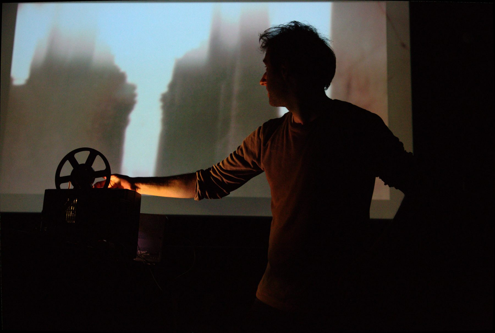
Kris Limbach
sound artist and composer · experimental music, sound art, expanded cinema · Berlin
- Film editing
- Prepared drums
- Tape manipulation
- No input mixing
- Field recordings
- Super 8
Works
Films
 Ohnmacht
OhnmachtOhnmacht
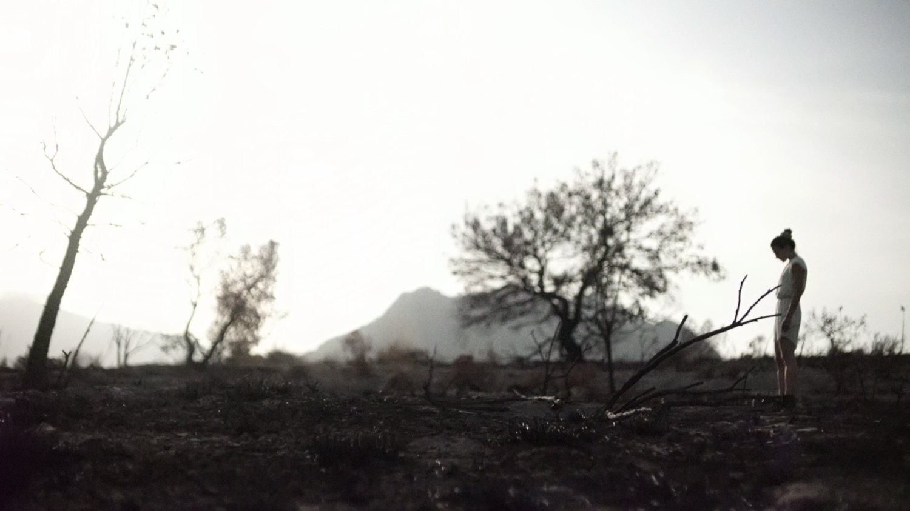
The Lost Color
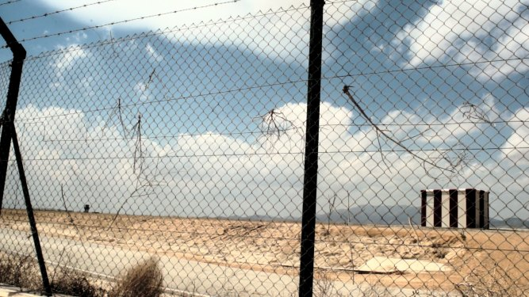
Music for Dysfunctional Airports
Sound for film
Composition
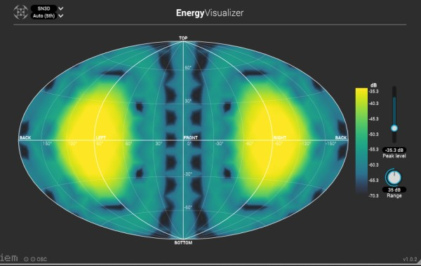
Vertical Movements

begin _if_ ()
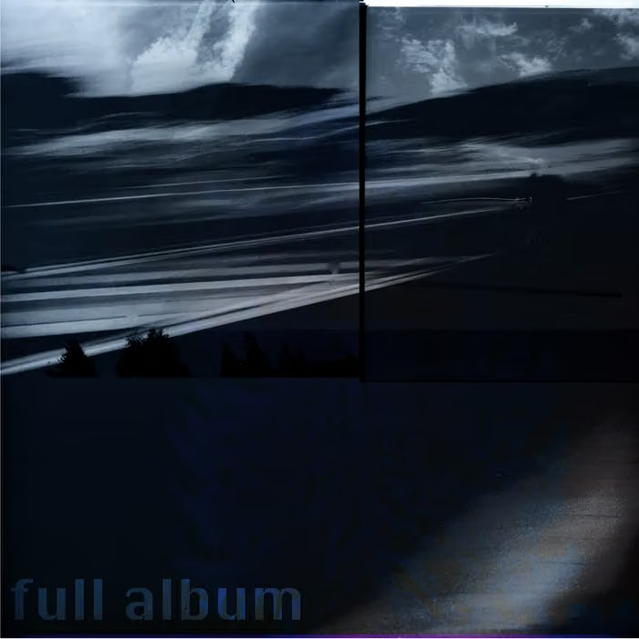
Full Album
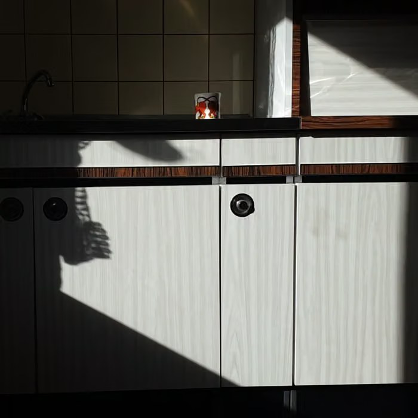
The Last Minute Of
Live
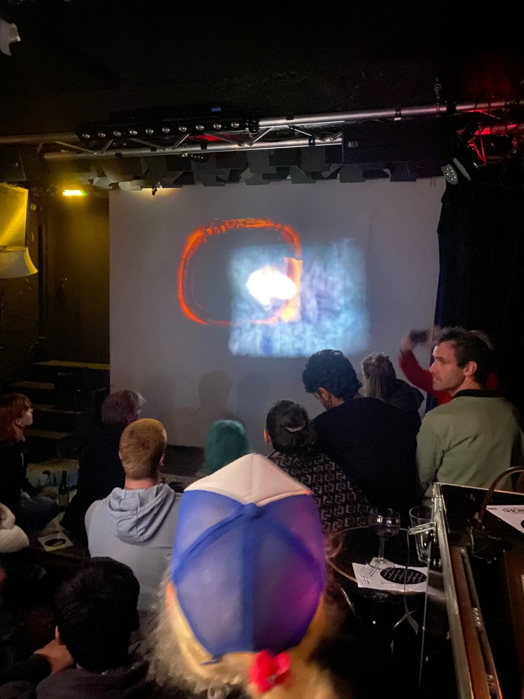
Performance for film and tapes

Feedback for the last Shelter
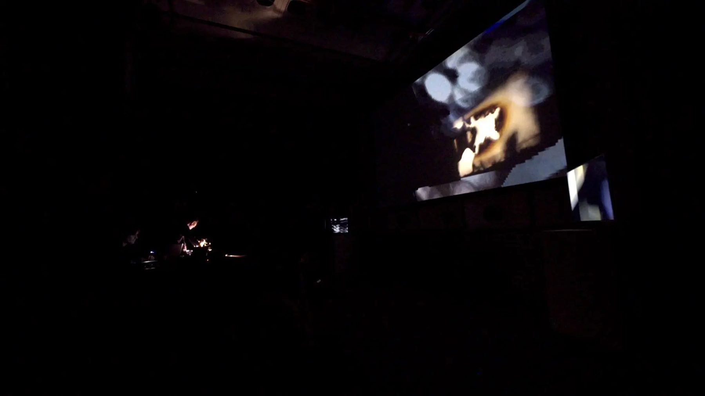
Secret Shots
Panoptik
Audiovisual trioPanoptik
Collaborations & curating
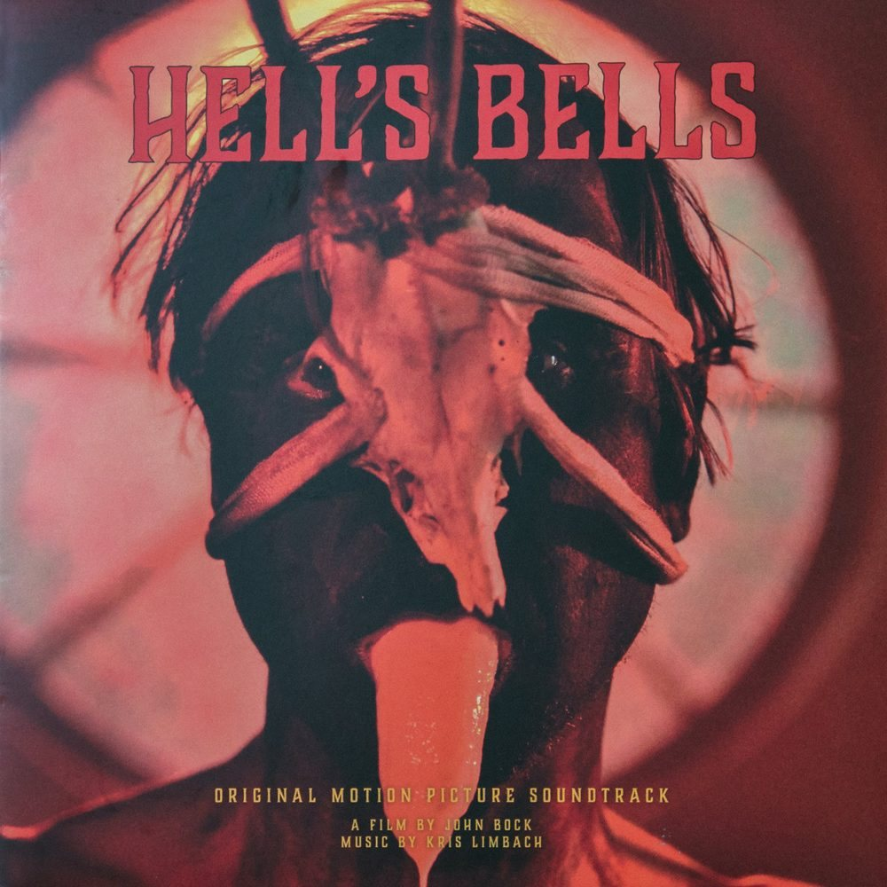
Sound for John Bock
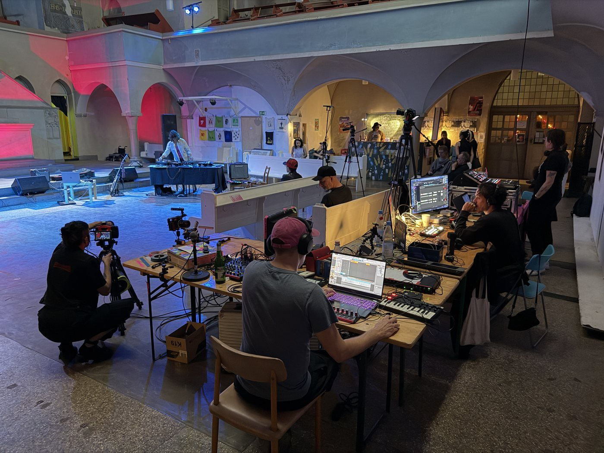
T.A.T.V.
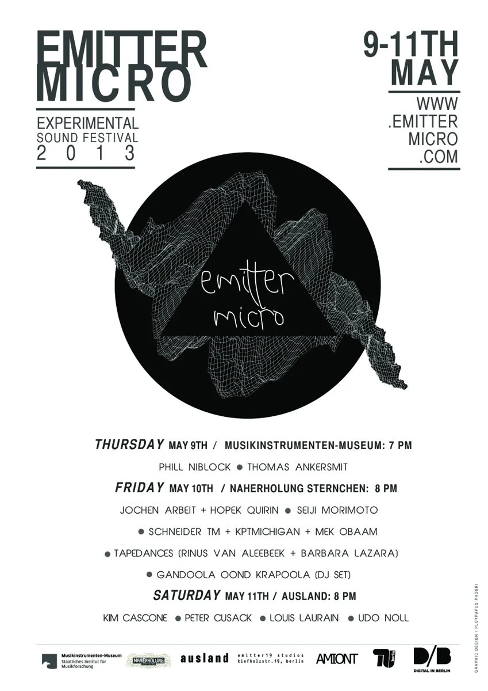